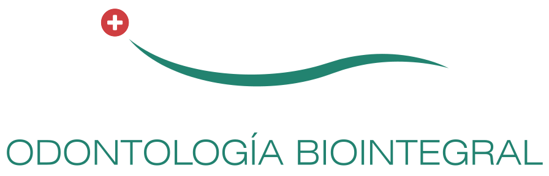

MIRAFLORES · LIMA
Una sonrisa saludable.
Una atención cercana.
Odontología integral y tratamientos personalizados, con tiempo para escucharte.
Dr. Maximiliano Monsú Hossly
de experiencia
internacional
personalizada

SOBRE MÍ
Tu tranquilidad también forma parte del tratamiento.
Soy Maximiliano Monsú Hossly, cirujano dentista. Mi enfoque combina prevención, cuidado conservador y una atención cercana.
Formación en Córdoba, Argentina · C.O.P. 50473
Trabajo junto a un equipo interdisciplinario.
TRATAMIENTOS
El cuidado que tu sonrisa necesita.
Selecciona un tratamiento para conocer sus opciones, cómo se realiza y qué puedes esperar.
Cada tratamiento empieza con una evaluación. Las indicaciones y los resultados dependen de tu caso.
DISEÑO DIGITAL DE SONRISA
Visualiza tu sonrisa antes del tratamiento.
La planificación digital permite conversar sobre el resultado esperado antes de comenzar.
Registro digital
Fotografías y video para analizar tu sonrisa y cómo se relaciona con tu rostro.
Propuesta visual
Una simulación para mostrarte cómo podría verse el tratamiento y ajustar expectativas.
Prueba provisoria
Una maqueta temporal que te permite ver y probar la propuesta antes de decidir.
La simulación es una herramienta de planificación. El resultado final depende de la evaluación y de cada caso.

MI ENFOQUE
Un enfoque conservador e integral.
Busco preservar la mayor cantidad de tejido dental sano y considerar tu salud bucal como un todo. La tecnología es una herramienta; tu bienestar es el centro.
Primero, escucharte
Tu historia, tus inquietudes y lo que esperas del tratamiento.
Un plan que entiendas
Opciones y pasos explicados con claridad para que puedas decidir.
Acompañarte en el proceso
Tratamiento y seguimiento, con el apoyo del equipo cuando tu caso lo necesita.
ODONTOLOGÍA A DOMICILIO
Tu atención, también en casa.
Tratamientos odontológicos con los máximos estándares de calidad y bioseguridad, donde nos necesites.
Busco mejorar tu calidad de vida acercando la atención odontológica a tu hogar, escuela, residencia o empresa.
Contamos con unidades dentales y quirófanos portátiles, con tecnología suiza de última generación, para brindar comodidad, seguridad y atención integral fuera del consultorio.
Trabajo junto a un equipo interdisciplinario para ofrecer la misma calidad de atención que en consultorio. Los tratamientos que pueden realizarse a domicilio se definen según cada caso.
01Paciente asociadoSe atiende con el Dr. Monsú o llega recomendado.
02Atención incluidaAcceso domiciliario como beneficio del tratamiento.
24 hUrgencias todos los díasEvaluación telefónica y coordinación.
ATENCIÓN A DISTANCIA
Teleconsulta para pacientes del interior.
Una primera orientación profesional por videollamada para conversar sobre tu caso y definir los próximos pasos.
SIN QUEDARTE CON DUDAS
Preguntas frecuentes
Algunas respuestas para
preparar tu primera visita.
¿Cómo coordino una cita?
Escríbeme directamente por WhatsApp. Cuéntame brevemente qué necesitas y coordinamos un horario para tu consulta.
¿Qué significa ser paciente asociado?
Es un paciente que se atiende habitualmente con el Dr. Monsú o que llega recomendado. Sus tratamientos incluyen acceso al beneficio de atención domiciliaria.
¿Cómo funciona una urgencia 24 horas?
El primer contacto se realiza por teléfono. El Dr. evalúa la situación, indica medicación cuando corresponde y programa la atención en domicilio o consultorio. El servicio está disponible en Surco y Miraflores.
¿Puedo solicitar atención a domicilio?
El servicio es para pacientes asociados y se coordina con flexibilidad según el tratamiento, la ubicación y la disponibilidad.
¿Cómo coordino una teleconsulta?
Escríbenos por WhatsApp. Coordinaremos tu teleconsulta y te compartiremos el enlace de acceso y las indicaciones.
CONTACTO
Coordina tu consulta.
Escríbeme por WhatsApp para coordinar tu cita
o consultar sobre un tratamiento.
Urbanización La AuroraMiraflores · Lima, Perú
Lunes a sábado9:00 a 20:30 · Previa cita
Urgencias 24 horasAtención telefónica · Surco y Miraflores